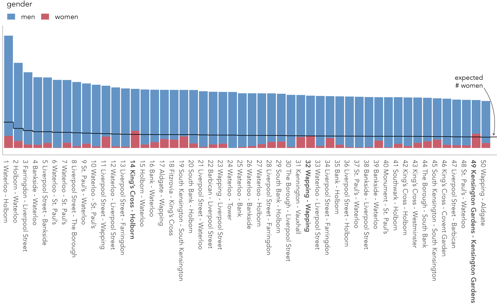

1 Introduction
By the end of this chapter you should gain the following knowledge and practical skills.
1.1 Introduction
This chapter introduces the what, why and how of the book. An argument is presented for the use of visual approaches in modern data analysis, especially social data science analysis, and the key technologies and analysis frameworks for the book are introduced: computational notebooks prepared via Quarto. The technical component consolidates on any prior knowledge of R and Quarto as well as demonstrates how to organise data science analyses as RStudio Projects.
1.2 Concepts
1.2.1 Why visualization?
It is now taken-for-granted that new data, new technology and new ways of doing science have transformed how we approach the world’s problems. Evidence for this can be seen in the response to the Covid-19 pandemic. Enter Covid19 github into a search and you’ll be confronted with hundreds of code repositories demonstrating how data variously related to the pandemic can be collected, processed and analysed. Data Science (hereafter data science) is a catch-all term used to capture this shift.
The definition has been somewhat stretched over the years, but data science has its origins in the work of John Tukey’s The Future of Data Analysis (1962). Drawing on this, and a survey of more recent work, Donoho (2017) identifies six key facets that a data science discipline might encompass:
- data gathering, preparation and exploration;
- data representation and transformation;
- computing with data;
- data visualization and presentation;
- data modelling;
- and a more introspective “science about data science”
Each is covered to varying degrees within the book. Data visualization and presentation gets a special status. Rather than a single and self-contained facet of data science process – something that happens after data gathering, preparation and exploration, but before modelling – the book demonstrates how data visualization is intrinsic to, or at least should inform, every facet of data science work: to capture complex, multivariate structure (chapters 3, 4, 5), provoke critical thinking around data transformation and modelling (chapters 4, 5 and 6) and communicate observed patterns with integrity (chapters 7 and 8).
This special status is further justified when considering the circumstances under which Social Data Science (hereafter social data science) projects operate. New datasets are typically repurposed for social science research for the first time; contain complex structure and relations that cannot be easily captured and modelled using conventional statistics; and, as a consequence, where the types of questions asked and techniques deployed to answer them cannot be easily specified in advance. This is demonstrated in the case study below, in which data graphics reveal structure and relations in London bikeshare usage that could have not been easily identified with non-visual means.
Case study: repurposing bikeshare data for urban travel analysis
In the early 2010s, major cities launched bikeshare systems with technologies that automatically record data on their users. Data harvested from such systems enable city-wide cycling behaviours to be profiled in new and large-scale ways, but they also present challenges. Bikeshare systems describe a particular category of cycling. The available user data, whilst spatiotemporally precise and ‘population-level’, are insufficiently detailed to easily assess how typical of cyclists are its users. Factors such as motivations, drivers and barriers to cycling, which especially interest transport researchers and planners, can only be inferred since they are not directly measured.
Figure 1.1 shows a sample of user data collected via London’s bikeshare system. The Journeys table describes individual trips made between bikeshare docking stations; Stations, the locations of docking stations; and in Members high-level details of system users that can be linked to Journeys via a memberID. Summarising overJourneys, Figure 1.1 shows statistical summaries that help us guess at how the system might be used: the hourly and daily profile of trips implying commuter-oriented usage; the 1D distribution of journey frequencies suggesting large numbers of short, so-called ‘last mile’ trips; the expected heavy-tail in the rank-size plot confirming a large share of trips are made between a relatively select set of docking stations.
Whilst useful, these summaries and statistical graphics are abstractions. They do not necessarily characterise how users of the bikeshare system cycle around the city – where there is more or less cycling. Thinking carefully about the available variables (locations and timestamps describing the start and end of bikeshire trips) we can use graphics to expose these more synoptic patterns of usage. In Figure 1.2 journeys that occur during the morning weekday peak are encoded using flow-lines that curve towards their destination. The thickness and transparency of flow-lines varies by trip frequency. From this, we observe a clear commuter function in the morning peak, with trips from London’s major rail hubs – King’s Cross and Waterloo – connecting central and City of London.

1.2.2 What is (and is not) covered?
The chapters of this book blend both theory and practical coding activity to cover the fundamentals of visual data analysis. As the chapters progress, data processing and analysis code is applied to datasets from the Political Science, Urban and Transport Planning and Health domains. So the examples in the book demonstrate how visual approaches can be used to generate and evaluate real findings and knowledge.
To do this, a reasonably broad set of data processing and analysis procedures is covered. As well as developing expertise on the design of data-rich, visually compelling graphics, some tedious aspects of data processing and wrangling are required. Additionally, to learn how to make and communicate claims under uncertainty with data graphics, techniques for estimation and modelling from Statistics are needed. In short, Donoho (2017)’s six key facets of a data science discipline:
- data gathering, preparation, and exploration (Chapters 2, 3, 4);
- data representation and transformation (Chapters 2, 3);
- computing with data (Chapter 2, All chapters);
- data visualization and presentation (All chapters);
- data modelling (Chapters 4, 6, 7);
- and the “science about data science” (All chapters)
There is already an impressive set of open resources practically introducing how to do modern data analysis (Wickham and Grolemund 2017), visualization (Healy 2018), model building (Ismay and Kim 2020; Kuhn and Silge 2023) and geographic analysis (Lovelace, Nowosad, and Muenchow 2019). What makes this book different is the emphasis on doing applied data science throughout. We will identify problems as we gather data, discover patterns (some may even be spurious) through exploratory analysis, claim knowledge under uncertainty and communicate and tell stories with data.
Different from other visualization ‘primers’, we will consistently introspect into the data graphics produced. We will consider how they advance our analysis at different stages and the role of data graphics in building trust and integrity. We will pay particular attention to how statistics and models are embedded in graphics to emphasise important structure and de-emphaise spurious structure. To demonstrate this more expanded role of visual data analysis we briefly return to our bikeshare case study.
Case study: characterising gender differences in spatial cycling behaviour
Gender is an important theme in urban cycling research. High-cycling cities typically have equity in the level of cycling undertaken by men and women, and so the extent and nature of gender-imbalance in urban cycling is useful indicator of how amenable to cycling is a particular urban environment (c.f. Beecham and Wood 2014). Summarising over a year’s user data form London’s bikeshare system, 77% of trips contributed by registered users (members) are made by men. An obvious follow-up is whether the types and geography of trips made by men and women are distinctive. To explore this we set up a modelled expectation. Assuming that there were no differences in the types of trips made by men and women, were we to randomly sample an origin-destination (OD) journey between a pair of docking stations in the bikeshare user dataset, we would expect men to account for 77% of the journeys being made (the ‘global’ proportion of trips contributed by men).
In the rank size plot below (Figure 1.3), we select out the top 50 most cycled OD pairs in the dataset and examine the male-female split in those trips against our expectation (the dark line). In only three of those OD pairs (in bold) do we see a higher than expected proportion of trips contributed by women. This suggests that the journeys most popular with men are systematically different from those journeys most popular with women.

To consider the spatial context behind these differences, and for a much larger set of journeys, we update the flow-map graphic this time colouring flow lines according the direction and extent of deviation from our modelled expectation (Figure 1.4). The graphic shows stark geographic differences with men very much overrepresented in bikeshare trips characteristic of commuting (dark blue) – trips from major rail hubs (Waterloo and King’s Cross) and city and central London. By contrast women’s travel behvaiours are in fact more geographically diverse and varied; the dark red emphasising OD pairs where women are overrepresented.

1.2.3 How we’ll do visualization design and analysis?
1.2.3.1 R for modern data analysis
All data collection, analysis and reporting activity will be completed using the open source statistical programming environment R. There are several benefits that come from being fully open-source, with a critical mass of users. Firstly, there is an array of online fora, tutorials and code examples from which to learn. Second, with such a large community, there are numerous expert R users who themselves contribute by developing packages that extend its use.
Of particular importance is the tidyverse. This is a set of packages for doing data science authored by the software development team at the company Posit. tidyverse packages share a principled underlying philosophy, syntax and documentation. Contained within the tidyverse is its data visualization package, ggplot2. This package predates the tidyverse and is one of the most widely-used toolkits for generating data graphics. As with other visualization toolkits it is inspired by Wilkinson (1999)’s The Grammar of Graphics, the gg in ggplot2 stands for Grammar of Graphics. We will cover some of the design principles behind ggplot2 and tidyverse in Chapter 3.
1.2.3.2 Quarto for reproducible research
In recent years there has been much introspection into how science works, particularly how statistical claims are made from reasoning over evidence. This came on the back of, amongst other things, a high profile paper published in the journal Science (Open Science Collaboration 2015), which found that of 100 contemporary peer-reviewed empirical papers in Psychology, the findings of only 39 could be replicated. The upshot is that researchers must now endeavour to make their work transparent, such that “all aspects of the answer generated by any given analysis [can] be tested” (Brunsdon and Comber 2021).
A reproducible research project should be accompanied with code and data that:
- allows tables and figures presented in research outputs to be regenerated
- does what it claims (the code works)
- can be justified and explained through proper documentation
If these goals are met, it should be possible for others to use the code on new and different data to study whether the findings reported in one project are consistent with another; or alternatively, to use the same data but update the code to extend the original analysis. This model – generate findings, explore replicability in new contexts and re-analysis – is how knowledge development has always worked. However, to achieve this the data and procedures on which findings are generated must be made open and transparent.
In this setting proprietary data analysis software that support point-and-click interaction, previously used widely in the social sciences, are problematic. First, point-and-click software are usually underpinned by code that is closed. It is not possible, and therefore less common, for the researcher to fully interrogate into the underlying procedures that are being implemented and the results need to be taken more or less on faith. Second, replicating and updating analyses in light of new data is challenging. It would be tedious to make notes describing all interactions performed when working with a dataset via a point-and-click- interface.
As a declarative programming environment, it is very easy to provide such a provenance trail in R. Also, and significantly, the Integrated Development Environments (IDEs) through which R is accessed offer computational notebook environments that blend input code, explanatory prose and outputs. Through the technical elements of this book, we will prepare these sorts of notebooks using Quarto.
1.3 Techniques
Readers of this book might already have some familiarity with R and the RStudio IDE. If not, then this section is designed to quickly acclimatise readers with R and RStudio and to briefly introduce Quarto, R scripts and RStudio Projects. The accompanying template file, 01-template.qmd, can be downloaded from the book’s companion website. This material on setup and basics is introduced briskly. For a more involved introduction, readers should consult Wickham, Çetinkaya-Rundel, and Grolemund (2023), the canonical handbook for modern data analysis in R.
1.3.1 R and RStudio
- Install the latest version of R. Note that there are installations for Windows, macOS and Linux. Run the installation from the file you downloaded (an
.exeor.pkgextension). - Install the latest version of RStudio Desktop. Note again that there are separate installations depending on operating system – for Windows an
.exeextension, macOS a.dmgextension. - Once installed, open the RStudio IDE.
- Open an R Script by clicking
File>New File>R Script.

You should see a set of windows roughly similar to those in Figure 1.5. The top left pane is used either as a code editor (the tab named Untitled1) or data viewer. This is where you’ll write, organise and comment R code for execution or inspect datasets as a spreadsheet representation. Below this in the bottom left pane is the R Console, in which you write and execute commands directly. To the top right is a pane with the tabs Environment and History. This displays all objects – data and plot items, calculated functions – stored in-memory during an R session. In the bottom right is a pane for navigating through project folders, displaying plots, details of installed and loaded packages and documentation on their functions.
1.3.2 Compute in the console
You will write and execute almost all code from the code editor pane. To start though let’s use R as a calculator by typing some commands into the console. You’ll create an object (x) and assign it a value using the assignment operator (<-), then perform some simple statistical calculations using functions that are held within the base package.
Type the commands contained in the code block below into your R Console. Notice that since you are assigning values to each of these objects they are stored in memory and appear under the Global Environment pane.
# Create variable and assign a value.
x <- 4
# Perform some calculations using R as a calculator.
x_2 <- x^2
# Perform some calculations using functions that form baseR.
x_root <- sqrt(x_2)
R package documentation
The base package exists as standard in R. Unlike other packages, it does not need to be installed and called explicitly. One means of checking the package to which a function you are using belongs is to call the help command (?) on that function: e.g. ?mean().
1.3.3 Install some packages
There are two steps to getting packages down and available in your working environment:
-
install.packages("<package-name>")downloads the named package from a repository. -
library(<package-name>)makes the package available in your current session.
Download tidyverse, the core collection of packages for doing Data Science in R, by running the code below:
install.packages("tidyverse")If you have little or no experience in R, it is easy to get confused about downloading and then using packages in a session. For example, let’s say we want to make use of the Simple Features package (sf) (Pebesma 2018) for performing spatial operations.
Unless you’ve previously installed sf, you’ll probably get an error message that looks like this:
> Error in library(sf): there is no package called ‘sf’So let’s install it.
install.packages("sf")And now it’s installed, bring up some documentation on one of its functions, st_contains(), by typing ?<function-name> into the Console.
?st_contains()Since you’ve downloaded the package but not made it available to your session, you should get the message:
> Error in .helpForCall(topicExpr, parent.frame()) :
no methods for ‘st_contains’ and no documentation for it as a functionSo let’s try again, by first calling library(sf).
library(sf)
## Linking to GEOS 3.11.0, GDAL 3.5.3, PROJ 9.1.0
?st_contains()Now let’s install some of the remaining core packages on which this book depends. Run the block below, which passes a vector of package names to the install.packages() function.
pkgs <- c(
"devtools","here", "quarto","fst","tidyverse", "lubridate",
"tidymodels", "gganimate", "ggforce", "distributional", "ggdist"
)
install.packages(pkgs)
R package visibility
If you wanted to make use of a package only very occasionally in a single session, you could access it without explicitly loading it via library(<package-name>), using this syntax: <package-name>::<function_name>, e.g. sf::st_contains().
1.3.4 Experiment with Quarto
Quarto documents are suffixed with the extension .qmd. They are computational notebooks that blend code with textual explanation and images, and so are a mechanism for supporting literate programming (Knuth 1984). They resemble Markdown, a lightweight language designed to minimise tedious markup tags (<header></header>) when preparing HTML documents. The idea is that you trade some flexibility in the formatting of your HTML for ease-of-writing. Working with Quarto documents feels very similar to Markdown. Sections are denoted hierarchically with hashes (#, ##, ###) and emphasis using * symbols (*emphasis* **added** reads emphasis added ). Different from standard Markdown, Quarto documents can also contain code chunks to be run when the document is rendered; they are a mechanism for producing reproducible, dynamic and interactive notebooks. Dynamic and reproducible because the outputs may change when there are changes to the underlying data; interactive because they can execute not just R code blocks, but also Jupyter Widgets, Shiny and Observable JS. Each chapter of this book has an accompanying Quarto file. In later chapters you will use these to author computational notebooks that blend code, analysis prose and outputs.
Download the 01-template.qmd file for this chapter and open it in RStudio by clicking File > Open File ... > <your-downloads>/01-template.qmd. Note that there are two tabs that you can switch between when working with .qmd files. Source retains markdown syntax (e.g. #|##|### for headings); Visual renders these tags and allows you to, for example, perform formatting and build tables through point-and-click utilities.
A quick anatomy of .qmd files :
- YAML - positioned at the head of the document and contains metadata determining amongst other things the author details and the output format when rendered.
- TEXT - incorporated throughout to document and comment on your analysis.
- CODE chunks - containing discrete blocks that are run when the
.qmdfile is rendered.

.qmd files
The YAML section of a .qmd file controls how your file is rendered and consists of key: value pairs enclosed by ---. Notice that you can change the output format to generate for example .pdf, .docx files for your reports.
---
author: "Roger Beecham"
title: "Chapter 01"
format: html
---Quarto files are rendered with the Render button, annotated in Figure 1.6 above. This starts pandoc, a library that converts Markdown files, and executes all the code chunks and, in the case above, outputs an .html file.
- Render the 01-template.qmd file for this chapter by clicking the Render button.
You will notice that code chunks in Quarto can be customised in different ways. This is achieved by populating fields immediately after the curly brackets used to declare the code chunk.
```{r}
#| label: <chunk-name>
#| echo: true
#| eval: false
# The settings above mean that any R code below
# is not run (eval-uated), but printed (echo-ed)
# in this position when the .qmd doc is rendered.
```A quick overview of the parameters:
-
label: <chunk-name>Chunks can be given distinct names. This is useful for navigating Quarto files. It also supports chaching – chunks with distinct names are only run once, important if certain chunks take some time to execute. -
echo: <true|false>Determines whether the code is visible or hidden from the rendered file. If the output file is a data analysis report you may not wish to expose lengthy code chunks as these may disrupt the discursive text that appears outside of the code chunks. -
eval: <true|false>Determines whether the code is evaluated (executed). This is useful if you wish to present some code in your document for display purposes. -
cache: <true|false>Determines whether the results from the code chunk are cached.
1.3.5 R Scripts
Whilst there are obvious benefits to working in .qmd documents when doing data analysis, there may be occasions where a script is preferable. R scripts are plain text files with the extension .R. They are typically used for writing discrete but substantial code blocks that are to be executed. For example, a set of functions that relate to a particular use case might be organised into an R script, and those functions referred to in a data analysis from a .qmd in a similar way as one might import a package. Below is an example script file with helper functions to support flow visualizations in R. The script is saved with the file name bezier_path.R. If it were stored in a sensible location, like a project’s code folder, it could be called from a .qmd file with source("code/bezier_path"). R scripts can be edited in the same way as Quarto files in RStudio, via the code editor pane.
# Filename: bezier_path.R
#
# Author: Roger Beecham
#
#-----------------------------------------------------------------------
# This function takes cartesian coordinates defining origin and destination
# locations and returns a tibble representing a path for an asymmetric
# bezier curve, which curves towards the destination location.
#
# The tibble has three rows representing an origin, destination and control
# point for the bezier curve. The parameterisation follows that published in
# Wood et al. 2011. doi: 10.3138/carto.46.4.239.
# Generate bezier trajectory.
# o_x, o_y : numeric coords of origin
# d_x, d_y : numeric coords of destination
# od_pair : text string identifying name of od-pair
# curve_extent : optional parameter controlling angle with which line
# curves to its destination.
# curve_position : optional parameter controlling position, relative to
# line length that curve bends out.
get_trajectory <-
function (o_x, o_y, d_x, d_y, od_pair, curve_extent=-90, curve_position=6)
{
curve_angle = get_radians(-curve_extent)
x = (o_x - d_x)/curve_position
y = (o_y - d_y)/curve_position
c_x = d_x + x * cos(curve_angle) - y * sin(curve_angle)
c_y = d_y + y * cos(curve_angle) + x * sin(curve_angle)
d <- tibble::tibble(x = c(o_x, c_x, d_x), y = c(o_y, c_y,
d_y), od_pair = od_pair)
return(d)
}
# Convert degrees to radians.
# degrees : value of angle in degrees to be transformed
get_radians <- function(degrees) { (degrees * pi) / (180) }R Scripts are more straightforward than Quarto files in that you don’t have to worry about configuring code chunks. They are really useful for quickly developing bits of code. This can be achieved by highlighting over the code that you wish to execute and clicking the Run icon at the top of the code editor pane or by typing ctrl + rtn on Windows, ⌘ + rtn on macOS.
.qmd file, not R scripts, for data analysis
Unlike .qmd everything within a script file is treated as code to be executed, unless it is commented with a #. Comments should be informative but paired back. As demonstrated above, it becomes somewhat tedious to read comments when they tend towards prose. For social science use cases, where code is largely written for analysis rather than software development, computational notebooks such as .qmd are preferred over R scripts.
1.3.6 Create an RStudio Project
Throughout the book we will use project-oriented workflows. This is where all files pertaining to a data analysis – data, code and outputs – are organised from a single top-level, or root, folder and where file path discipline is maintained such that all paths are relative to the project’s root folder (see Chapter 7 of Wickham, Çetinkaya-Rundel, and Grolemund 2023). You can imagine this self-contained project setup is necessary for achieving reproducibility of your research. It allows anyone to take a project and run it on their own machines with minimal adjustment.
When opening RStudio, the IDE automatically points to a working directory, likely the home folder for your local machine. RStudio will save any outputs to this folder and expect any data you use to be saved there. Clearly to incorporate neat, self-contained project workflows you will want a dedicated project folder rather than the default home folder for your machine. This can be achieved with the setwd(<path-to-your-project>) function. The problem with doing this is that you insert a path which cannot be understood outside of your local machine at the time it was created. This is a real pain. It makes simple things like moving projects around on your machine an arduous task and most importantly it hinders reproducibility if others are to reuse your work.
RStudio Projects resolve these problems. Whenever you load an RStudio Project, R starts up and the working directory is automatically set to the project’s root folder. If you were to move the project elsewhere on your machine, or to another machine, a new root is automatically generated – so RStudio projects ensure that relative paths work.

Let’s create a new Project for this book:
- Select
File>New Project>New Directory. - Browse to a sensible location and give the project a suitable name. Then click
Create Project.
You will notice that the top of the Console window now indicates the root for this new project (~projects/vis4sds).
- In the top-level folder of your project, create folders called
code,data,figures. - Save this session’s 01-template.qmd file to the
vis4sdsfolder.
Your project’s folder structure should now look like this:
vis4sds\
vis4sds.Rproj
01-template.qmd
code\
data\
figures\1.4 Conclusions
Visual data analysis approaches are necessary for exploring complex patterns in data and to make and communicate claims under uncertainty. This is especially true of social data science applications, where datasets are repurposed for research often for the first time; contain complex structure and geo-spatial relations that cannot be easily captured by statistical summaries alone; and, consequently, where the types of questions that can be asked and the techniques deployed to answer them cannot be specified in advance. This is demonstrated in the book as we explore (Chapters 4 and 5), model under uncertainty (Chapter 6) and communicate (Chapters 7 and 8) with various social science datasets. All technical activity in the book is completed in R, making use of tools and software libraries that form part of the R ecosystem: the tidyverse for doing modern data science and Quarto for helping to author reproducible research documents.
1.5 Further Reading
A paper that introduces modern data analysis and data science in a straightforward way, eschewing much of the hype:
- Donoho, D. 2017. “50 Years of Data Science” Journal of Computational and Graphical Statistics, 26(6): 745–66. doi: 10.1080/10618600.2017.13847340.
For a perspective on open code and reproducibility:
- C. Brunsdon and Comber, A. 2021 “Opening Practice: Supporting Reproducibility and Critical Spatial Data Science”, Journal of Geographical Systems, 23: 477–496. doi: 10.1007/s10109-020-00334-2.
On R Projects and workflow:
- Wickham, H., Çetinkaya-Rundel, M., Grolemund, G. 2023, “R for Data Science, 2nd Edition”, Orielly.
- Chapter 7.
On Quarto:
- Wickham, H., Çetinkaya-Rundel, M., Grolemund, G. 2023, “R for Data Science, 2nd Edition”, Orielly.
- Chapters 29, 30.